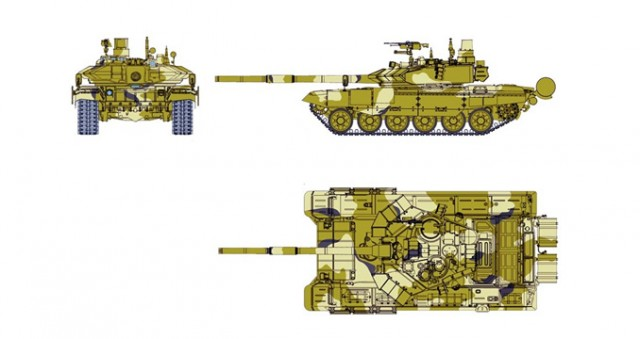
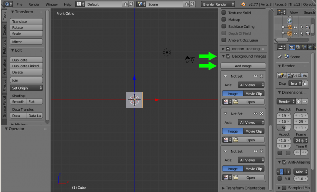
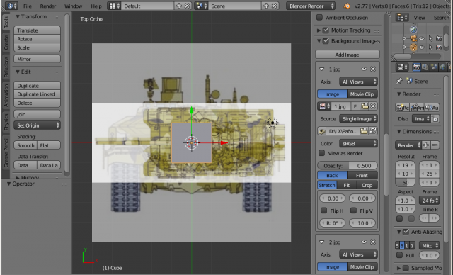
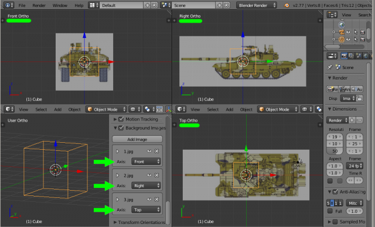

При 3d моделировании объекта часто приходится ориентироваться на его референсные изображения. Для удобства эти изображения помещают в качестве фона на задний план для каждого вида. Рассмотрим, как это сделать в 3d редакторе Blender 2.7.
Речь пойдет о том, что для удобства моделирования необходимо иметь изображение предмета в нужной проекции, и разместить это изображение как фон. Обычно хорошо бы иметь изображение с трех видов, а в идеале нужно изображение в шести видах (если конструируемый объект несимметричный).
Сразу отметим, что, во-первых, фоновые изображения отображаются только в ортогональной проекции, которая включается/отключается клавишей «NumPad5» либо через меню «View» – «View Persp/Ortho». Во-вторых, только на следующих семи видах: спереди «NumPad1», сзади «Ctrl+NumPad1», справа «NumPad3», слева «Ctrl+NumPad3», сверху «NumPad7», снизу «Ctrl+NumPad7» и из камеры «NumPad0».
Размещаем референсные изображения в окнах проекции Blender 3D
Для начала работы нам потребуются референсные изображения. В данном случае приведены примеры для трёх основных видов: спереди, справа и сверху.

Запускаем Blender, включаем ортогональную проекцию «NumPad5» и переходим на вид спереди «NumPad1».
Вызываем информационное окно клавишей «N». Внизу находим вкладку «Background Images» (Фоновые Изображения), в которой находится кнопка «Add Image» (Добавить изображение). В данном примере нам необходимо добавить три изображения для трёх видов, поэтому нажимаем на эту кнопку три раза.

Появляются три вкладки для каждого вида. В каждой вкладке напротив надписи «Axis» есть выпадающее меню, в котором необходимо указать тот вид, к которому будет привязано изображение. По умолчанию стоит «All Views» (Видно Везде), то есть загруженное изображение будет видно во всех ортогональных видах.
Таким образом, необходимо в первой вкладке назначить вид спереди «Front», во второй – справа «Right», в третьей – сверху «Top». Но это сделаем позже, а пока в каждую вкладку через кнопку «Open» загрузим соответствующие изображения. В итоге получим следующий результат.

Выравниваем фоновые изображения
Как видим, изображения легли друг на друга. Это сделано специально для того, чтобы выровнять их по размеру, так как сейчас изображение вида спереди намного больше, чем нужно. Но перед тем как это исправить, кратко рассмотрим параметры для манипулирования изображениями, которые появились после их загрузки.
Теперь, после выравнивания масштаба в меню «Axis» для каждого изображения указываем вид отображения.
В итоге при переключении между видами в каждом из них отображается индивидуальное изображение.

В следующем уроке по Blender, мы расскажем, как делать точное построение 3d модели по заданным параметрам с их измерением.